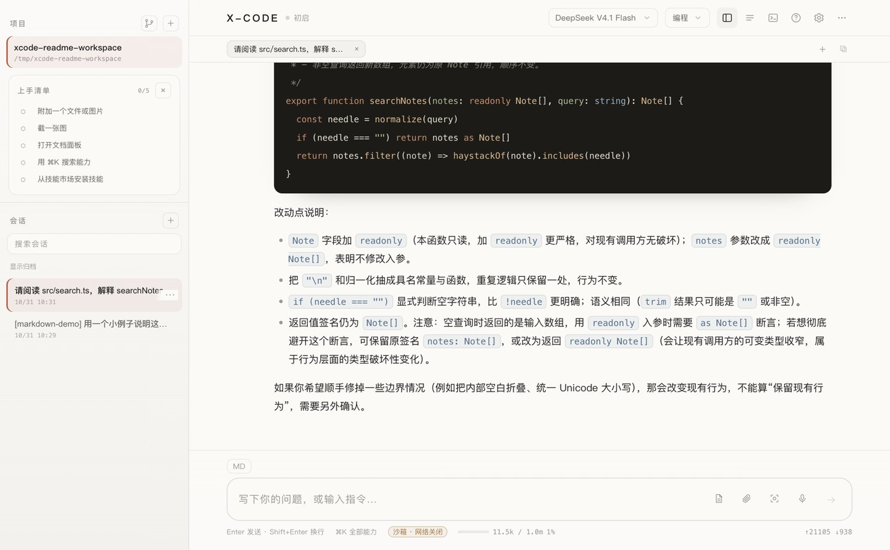

macOS app
Download the -arm64.dmg from the latest release, verify it against
SHA256SUMS, and drag X-Code into Applications.
macOS arm64 · MIT · no account
The window and the terminal are one program: same sessions, same memory, same skills, same permission rules. You bring the model and the key, and nothing leaves the machine except the request you configured.
Community build, ad-hoc signed — macOS asks for approval once. Install notes

Most agents assume a server in the middle. X-Code assumes your laptop is the server.
Start in the terminal, continue in a window. Both read and write the same state directory, so a task survives the switch — and so does everything you taught it.
~/.x-code
Every file edit, shell command and download arrives as a diff or an approval card. A three-level permission model decides what runs without asking, and the macOS agent shell is sandboxed to the workspace.
diff → approve → apply
Credentials are encrypted with the OS keychain and never reach the renderer process. Switch models from the top bar without losing the conversation.
safeStorage · 0600
Sixteen presets, including Anthropic's native Messages protocol, plus any OpenAI-compatible endpoint on localhost.
No key? The app starts on a local demo model so you can inspect the interface first.
Download the -arm64.dmg from the latest release, verify it against
SHA256SUMS, and drag X-Code into Applications.
Node 22+ or the same release workflow that publishes the app.
npm install -g @x-code-cli/cli@latest
xc --version
Node 22+ and pnpm 10. Useful when npm lags behind the latest release.
git clone https://github.com/qweijiaq/x-code.git
They are configured in CI but have not been accepted on real devices.
The app checks for a new release and hands you the download; it will not replace itself.
The community build is ad-hoc signed, so macOS asks for approval on first launch.